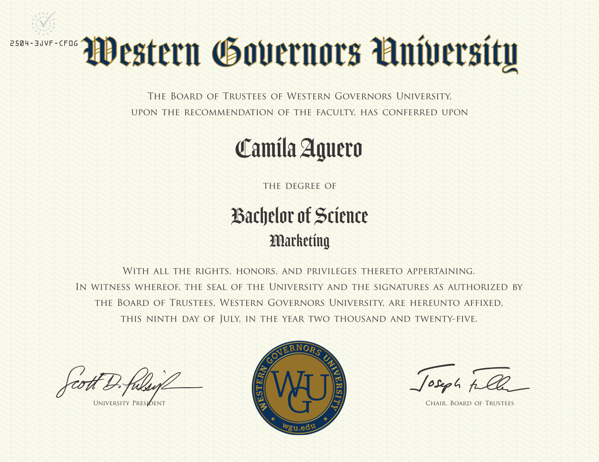

Bachelor of Science in Marketing
Western Governors University - July 2025

This degree provided a strong foundation in consumer behavior, marketing strategy, and data-driven decision-making, supporting my transition into data analytics
Western Governors University - July 2025

This degree provided a strong foundation in consumer behavior, marketing strategy, and data-driven decision-making, supporting my transition into data analytics
Coop Careers - June 2026

Completed a competitive 16-week Data Analytics Fellowship focused on SQL, Tableau, Excel, and data storytelling while collaborating on real-world analytics projects and presenting actionable business insights.
Multiverse - June 2023

Completed a 12-month Data Analytics Apprenticeship combining technical training with hands-on industry experience. Through project-based learning and real-world application, I developed expertise in SQL, Tableau, Power BI, data validation, stakeholder communication, and predictive analytics while delivering measurable business impact.
Google Career Certificates - August 2023

Completed Google's eight-course professional certificate program, developing a strong foundation in the end-to-end data analytics process. The program emphasized data cleaning, SQL querying, data visualization, statistical thinking, and communicating insights through real-world business case studies.